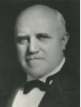

Party: Democrat
Bio: Running on stability and experience during the Great Depression while promising competent Democratic leadership after the resignation of Walker due to corruption.
Party: Republican
Bio: Advocating for fiscal reform, government efficiency, and the elimination of corruption.
Party: Socialist
Bio: Running on socialism, public ownership, and aggressive relief for the unemployed.
Party: Independent
Bio: Advocating for cost-cutting measures and anti-corruption.